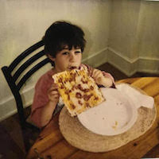

Adam Weissler
Ideation. Strategy. Storytelling. Photography + Film.
adamjweissler[at]gmail.com
A copywriter and project manager by trade, I have had the privilege of working with a wide range of clients across a variety of projects that include commercial advertising, television and film production, digital + social media marketing, print and out of home design, political campaign management, and policy/grant writing.
Past and current clients include Google, Reddit, Dr. Pepper, United Way, and The California Endowment as well as various political campaigns on national and local levels—if you want a full and exhaustive resume, you can check it out here.
Past work experience includes stints at Deutsch, Not Impossible Labs, Brave New Foundation, and the White House.
I currently work at Swell Creative Group (link), a social justice firm in Los Angeles, where I help to develop content, strategy, and communication tactics to help translate digital organizing into real world activism.